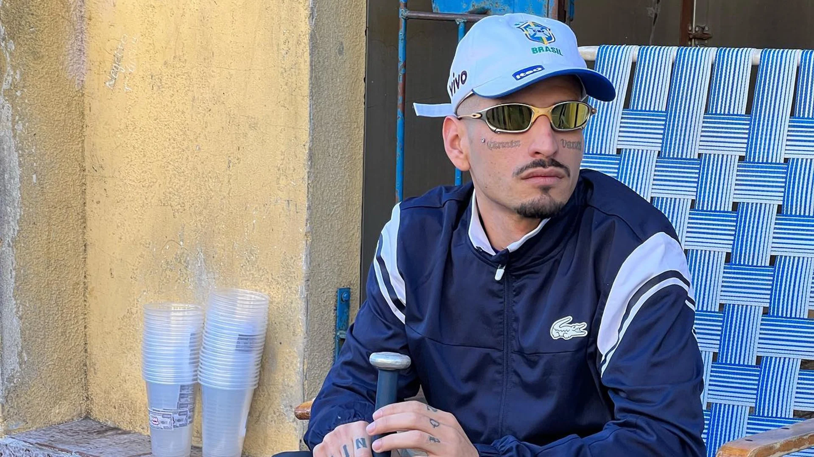
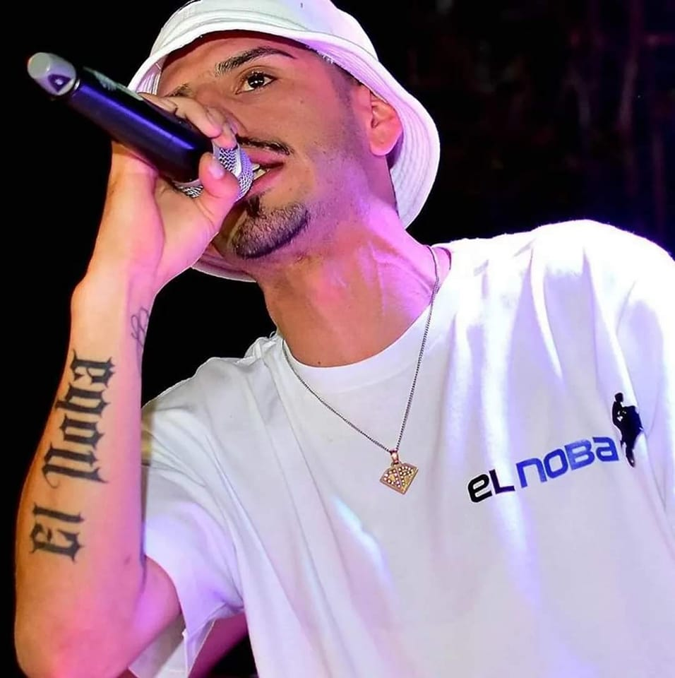
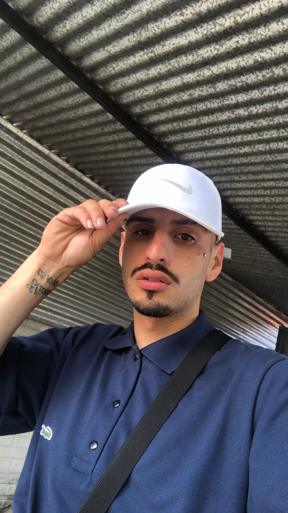
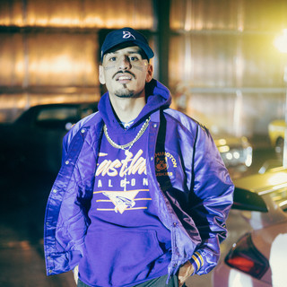
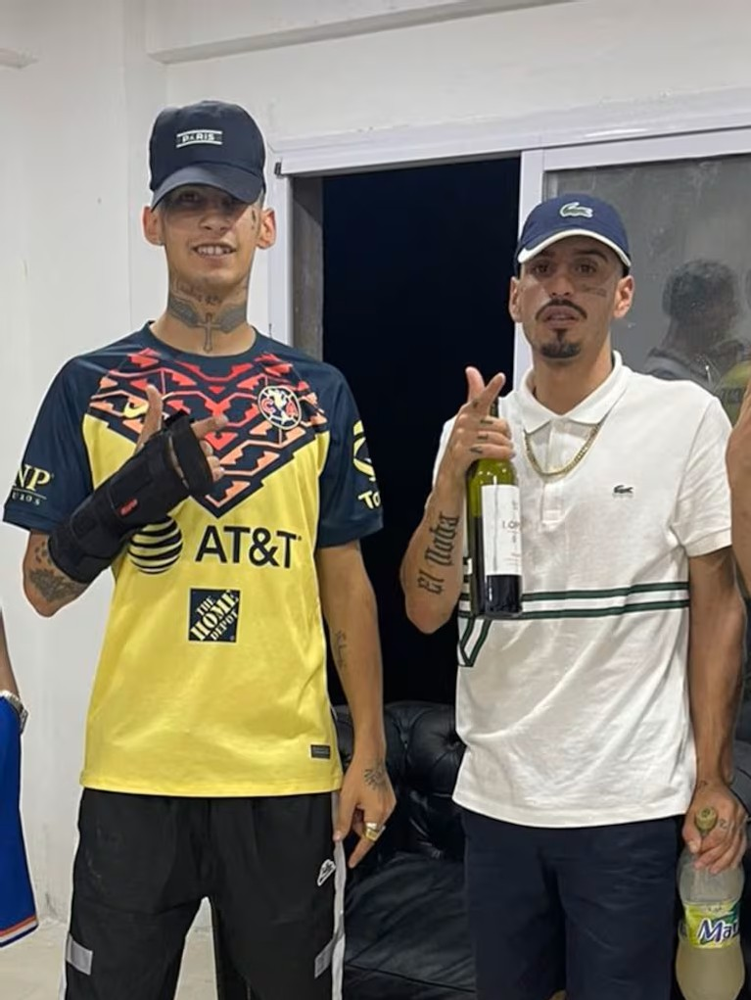
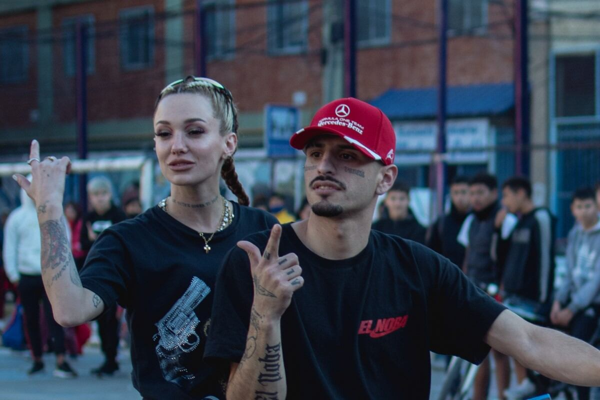
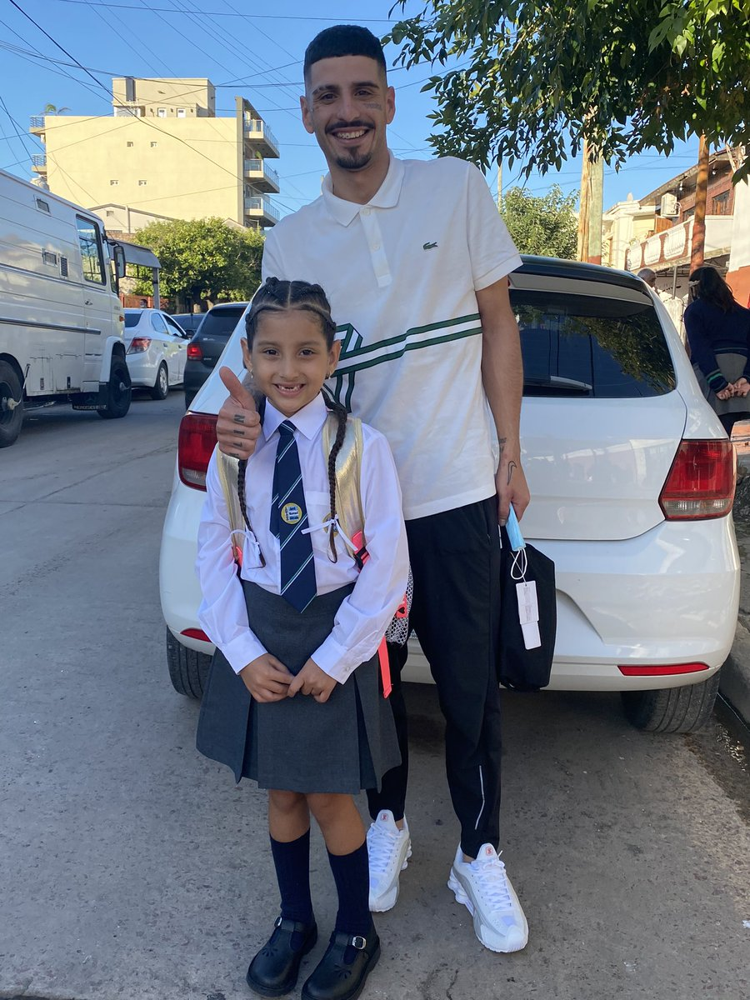

Lautaro Coronel · 2000 – 2022
"Una voz del conurbano que llegó al corazón de toda una generación y nunca se fue."

Sus orígenes
Lautaro Coronel nació el 15 de enero de 2000 en Florencio Varela, en el sur del Gran Buenos Aires. Creció en un contexto humilde que marcaría profundamente su personalidad, su música y la forma en que se conectaba con su público. Antes de hacerse conocido, Lautaro llevaba una vida muy distinta a la de un artista: trabajaba en albañilería y otros oficios informales para ayudar a su familia.
Sus primeras apariciones en internet mostraban una personalidad espontánea, divertida y muy segura de sí misma. Sus videos cortos, en los que contaba anécdotas o hablaba de su vida cotidiana, comenzaron a viralizarse y construyeron una base de seguidores que más tarde sería fundamental para su salto a la música.
Desde siempre mostró algo difícil de fingir: autenticidad absoluta. Hablaba como en el barrio, vestía simple, y se comportaba frente a la cámara como si charlara con un amigo. Eso fue lo que lo hizo diferente. Eso fue lo que lo hizo inmortal.
Sus pasos en la música
La carrera musical de El Noba comenzó casi de manera inesperada. En medio del crecimiento del RKT en Argentina, un género que ganaba cada vez más popularidad en TikTok y YouTube, Lautaro decidió probar suerte grabando música con productores y artistas de su entorno.
Su estilo se caracterizaba por letras simples, pegadizas y muy representativas de la vida en los barrios, acompañadas por bases bailables y ritmos contagiosos. A diferencia de otros artistas más producidos, El Noba mantenía una estética cruda y auténtica que lo hacía destacar dentro del movimiento.

Lanzada en 2021, "Tamo Chelo" se convirtió rápidamente en un fenómeno viral en TikTok, Instagram y YouTube, impulsado por su estribillo pegadizo y la personalidad única del artista. El tema logró millones de reproducciones en muy poco tiempo y empezó a sonar en fiestas, autos y discotecas de todo el país.
La canción representaba perfectamente el espíritu del RKT: ritmo bailable, actitud relajada y una estética de barrio que conectaba con los jóvenes. Gracias a ese éxito, El Noba pasó de ser un creador de contenido viral a convertirse en una de las caras más reconocidas del movimiento.

El movimiento RKT
El RKT no fue solo un fenómeno musical; fue una comunidad de artistas que se apoyaban entre sí. El Noba formó vínculos profundos con figuras clave de la escena urbana argentina, mostrando que el movimiento era también una familia.



Su vida personal
Más allá de la música y la fama, Lautaro también era conocido por su lado familiar. En varias ocasiones hablaba con orgullo de su hija y compartía momentos personales en sus redes sociales, mostrando ese amor genuino que tenía por ella.
Para él, su hija era una de las motivaciones más importantes para seguir creciendo, para salir adelante, para convertir los sueños en algo real. Muchos de sus seguidores destacaban este aspecto de su vida, viendo en él no solo a un artista, sino también a un padre joven que quería construir un mejor futuro para su familia.
Esa dualidad —el pibe del barrio que hacía hits virales y el papá que amaba a su hija con todo— era parte esencial de quien era Lautaro. Una persona real, completa, humana.
"Para él, su hija era la motivación más grande para seguir creciendo y mejorar su situación."
Una partida que nadie esperaba
Lautaro Coronel · 2000 – 2022
El 24 de mayo de 2022, El Noba sufrió un grave accidente de moto en Florencio Varela. Al perder el control del vehículo sufrió heridas muy graves que lo dejaron en estado crítico durante varios días.
Miles de fans, artistas y seguidores comenzaron a enviar mensajes de apoyo en redes sociales, prendiendo velas, publicando fotos y pidiendo por su recuperación con toda la esperanza del mundo. La escena urbana argentina se detuvo. Todos aguardaban una buena noticia.
El 3 de junio de 2022, Lautaro Coronel falleció a los 22 años, generando una conmoción profunda dentro de la música urbana argentina y entre todos quienes lo amaban. No hubo palabras suficientes. Solo silencio, lágrimas y recuerdos.
Lo que dejó para siempre
A pesar de su corta carrera, El Noba dejó una huella profunda dentro del movimiento RKT. Su música, su personalidad y su historia lo convirtieron en una figura que trasciende las plataformas y que vive en la memoria de quienes lo escucharon.
Hijo de Florencio Varela, la tierra de Defensa y Justicia. Como los pibes de la cancha, El Noba defendió su identidad, su barrio y su gente hasta el final. Su historia es también la historia de un pueblo que se expresa a través de la música, el arte y la pasión.